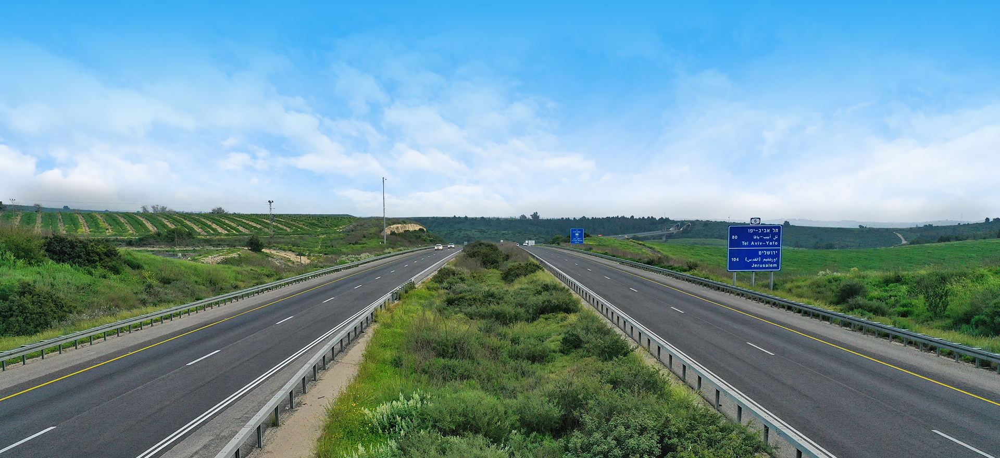
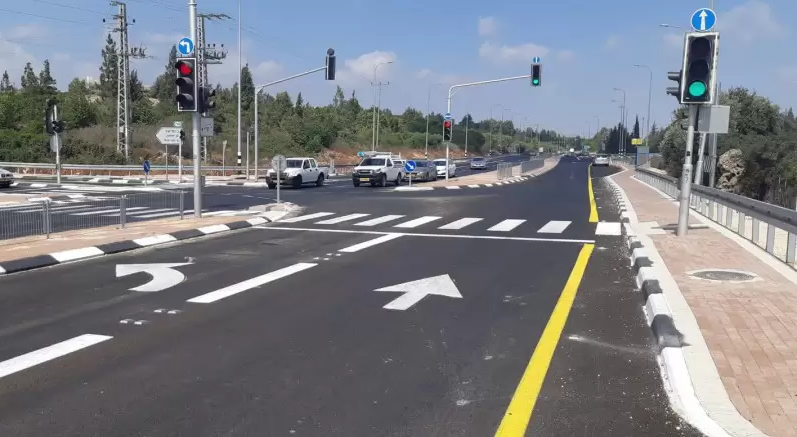
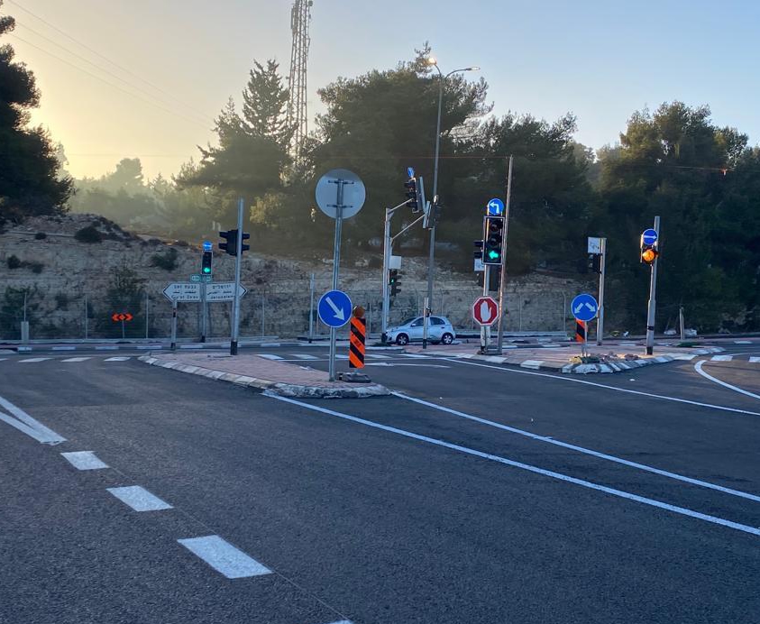

ללמוד לקרוא את הכביש
קורס דיגיטלי שמחבר בין חוקי הדרך למצבים שפוגשים באמת בנהיגה.

להבין את החוק לפני הרגע שבו צריך לפעול
בשיעור הנהיגה מתרגלים את הפעולה. כאן עוצרים לרגע כדי להבין את ההיגיון שמאחוריה.
הקורס עוזר לחבר בין התיאוריה לבין מה שרואים דרך השמשה. הוא לא מחליף את מורה הנהיגה, אלא נותן בסיס ברור יותר לתרגול המעשי בשיעור.
הנושאים שילמדו אתכם לחשוב כמו נהגים
בחרו נושא וקבלו הצצה למה שמפרקים ומתרגלים בקורס.
זכויות קדימה ופניות
לקרוא את מבנה הצומת, להבין את מדרג הציות ולדעת מתי ולאן אפשר לפנות בבטחה.
ההסבר המלא מלווה בדוגמאות ובסרטונים ממצבי נהיגה אמיתיים.


רואים מצב. מבינים את החוק. חוזרים לכביש מוכנים יותר.
כל נושא מתחיל בהסבר ברור וממשיך לסרטונים ממקרים שקרו באמת. כך אפשר לעצור, להסתכל שוב וללמוד מהטעויות לפני שפוגשים מצב דומה בשיעור.
- מפרקים את המצבמה רואים ומה דורש תשומת לב.
- מחברים לחוקאיזה כלל קובע את סדר הפעולות.
- מתכוננים לתרגולעם שאלות טובות יותר למורה הנהיגה.
נעים להכיר, אורן בכור
מורה נהיגה מוסמך מנתניה, עם יותר משמונה שנות ניסיון בהוראת נהיגה.
בניתי את הקורס כדי שאפשר יהיה להבין זכויות קדימה ונהיגה נכונה גם בתיאוריה וגם דרך מצבים אמיתיים.
הדרך מתחילה בהבנה
עברו על הנושאים ובחרו את המקום שבו תרצו להתחיל ללמוד.